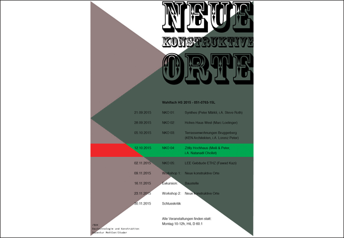

12.10.2015 CONFERENCE / BUK BAUTECHNOLOGIE UND KONSTRUKTION ETHZ
Nathanaël Chollet présente le projet de la tour d’habitation Zölly (ZH) au nom du bureau Meili Peter architectes. Sujet de la présentation: éléments en béton et préfabrication.
Nathanaël Chollet présente le projet de la tour d’habitation Zölly (ZH) au nom du bureau Meili Peter architectes. Sujet de la présentation: éléments en béton et préfabrication.